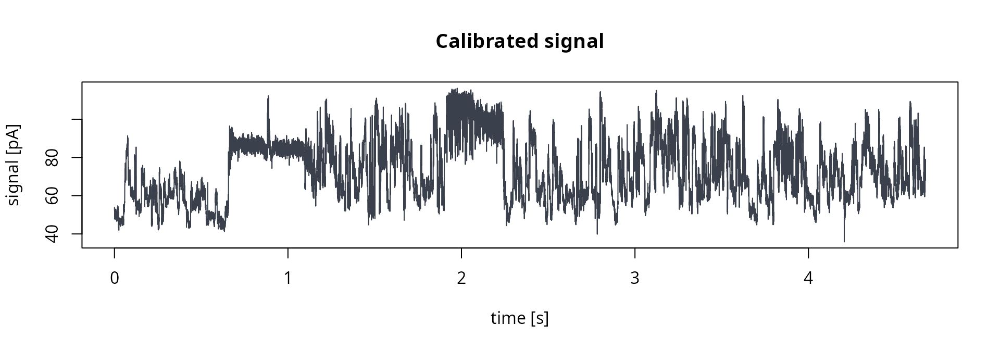
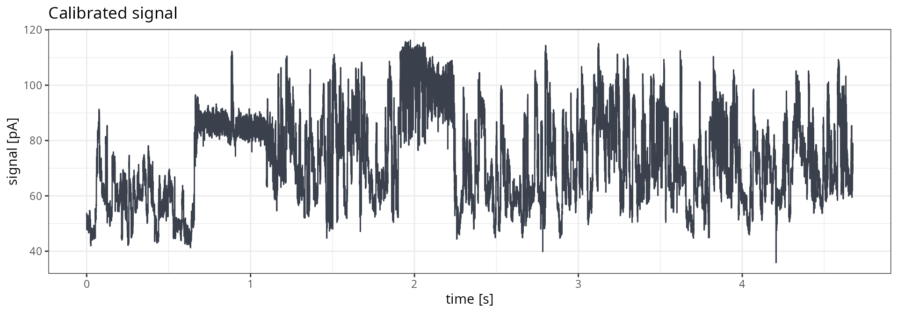
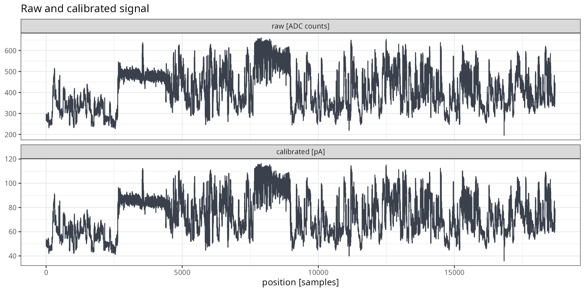
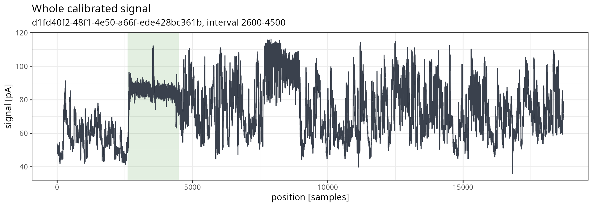
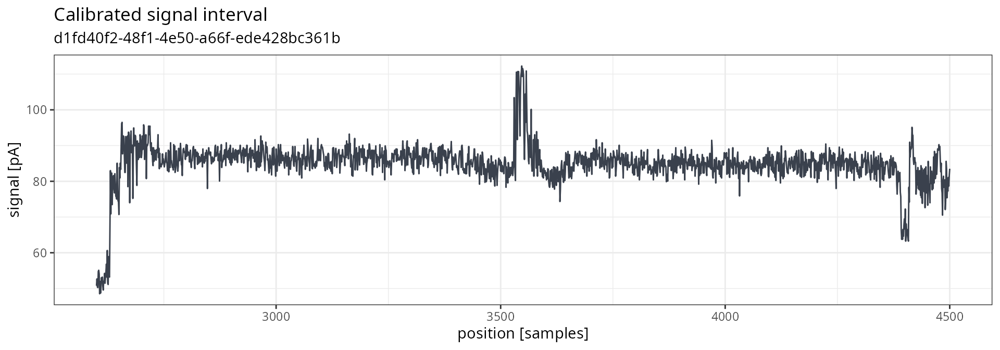

This vignette shows how to extract raw nanopore signals from POD5
files with pod5R, and how to plot them with base R
graphics or ggplot2. Two workflows are covered: direct extraction by
read identifier, and extraction preceded by reading the per-read
metadata. We recommend the second one whenever reads have to be selected
by their properties, or when the signal should be shown on a time axis.
Plotting of many reads is covered in
vignette("batch_plotting").
All examples use a small direct RNA sequencing (DRS) file shipped with the package. The same calls work for any POD5 file.
Note: pod5R provides read-only access. It does not segment the signal, detect poly(A) tails, or perform basecalling.
Example data
The example file is a real toy DRS dataset provided with the package.
File-level information can be retrieved with
read_pod5_info():
pod5_file <- system.file("extdata", "drs-filtered.pod5",
package = "pod5R", mustWork = TRUE)
pod5R::read_pod5_info(pod5_file)
## $file_identifier
## [1] "226b4f4e-e309-4e72-9320-6e9877e20700"
##
## $file_version
## [1] "0.3.46"
##
## $num_reads
## [1] 42
##
## $num_batches
## [1] 1
##
## $num_runs
## [1] 1To work with your own data, assign the path to your POD5 file to
pod5_file instead. All the following calls in this vignette
then work unchanged:
# path to your own POD5 file
pod5_file <- "/path/to/user/provided/file.pod5"
pod5R::read_pod5_info(pod5_file)Extraction without reading metadata first
Read identifiers
read_pod5_ids() returns read identifiers (UUIDs) in file
order. No signal data are decompressed at this stage.
read_ids <- pod5R::read_pod5_ids(pod5_file)
length(read_ids)
## [1] 42
head(read_ids, 3)
## [1] "0e8e52dc-3a71-4c33-9a00-e1209ba4d2e9"
## [2] "e6508401-c6a5-44be-ae64-455e982022ba"
## [3] "a7352eb3-9f1f-41e5-a63c-23cf76565a21"Raw signal
extract_pod5_signal() returns a list of signal vectors
named by read UUID, in the requested order. By default, signals are
returned raw, as integer ADC counts.
raw_list <- pod5R::extract_pod5_signal(pod5_file, read_ids = read_ids[1])
str(raw_list)
## List of 1
## $ 0e8e52dc-3a71-4c33-9a00-e1209ba4d2e9: int [1:21908] 273 290 289 305 291 288 285 273 258 269 ...Calibrated signal
With calibrated = TRUE, signals are returned as numeric
vectors in picoamperes (pA). Calibration uses the per-read values stored
in the file and is computed using formula
(raw_signal + calibration_offset) * calibration_scale.
pa_list <- pod5R::extract_pod5_signal(pod5_file,
read_ids = read_ids[1],
calibrated = TRUE)
str(pa_list)
## List of 1
## $ 0e8e52dc-3a71-4c33-9a00-e1209ba4d2e9: num [1:21908] 48.3 51.3 51.1 53.9 51.5 ...Signal intervals
A part of the signal can be requested with start_sample
and end_sample. Both coordinates are one-based and
inclusive. Only compressed chunks overlapping the interval are decoded,
so the extraction of short windows stays fast even for long reads.
Bounds beyond the end of the read are clipped.
In this example below, the interval is stored in two variables,
window_start and window_end. They are reused
in the Plotting section, so the extraction and
the plot always correspond to the same read samples.
# window used here and in the plotting section below
window_start <- 2600
window_end <- 4500
window_list <- pod5R::extract_pod5_signal(pod5_file,
read_ids = read_ids[1],
calibrated = TRUE,
start_sample = window_start,
end_sample = window_end)
length(window_list[[1]])
## [1] 1901Extraction with reading metadata first
Read metadata
read_pod5() returns one row of metadata per read. Unless
signal = TRUE is set, the signal data are not decompressed,
so the whole file can be scanned cheaply.
Opening a reader inspects every read batch of the file. When several
calls are made on the same file, the reader should be opened only once
with open_pod5(), reusing it, and closing it with
close_pod5().
reader <- pod5R::open_pod5(pod5_file)
reads <- pod5R::read_pod5(reader)
colnames(reads)
## [1] "read_id" "read_number"
## [3] "start_sample" "num_samples"
## [5] "channel" "well"
## [7] "pore_type" "calibration_offset"
## [9] "calibration_scale" "median_before"
## [11] "end_reason" "end_reason_forced"
## [13] "acquisition_id" "sample_rate"
## [15] "num_minknow_events" "open_pore_level"
## [17] "expected_open_pore_level" "selected_read_level"
head(reads[, c("read_id", "num_samples", "sample_rate", "end_reason")], 3)
## read_id num_samples sample_rate end_reason
## 1 0e8e52dc-3a71-4c33-9a00-e1209ba4d2e9 21908 4000 signal_positive
## 2 e6508401-c6a5-44be-ae64-455e982022ba 23300 4000 signal_positive
## 3 a7352eb3-9f1f-41e5-a63c-23cf76565a21 20462 4000 signal_positiveSelecting reads
Reads can be selected with ordinary R subsetting. In the example below, the read closest to the median signal length is chosen as a representative.
Metadata and signal in one call
With signal = TRUE, read_pod5() returns a
named list with reads (metadata in the requested order) and
signal (vectors named by UUID). By this, the calibration
values and the sample rate are kept next to the signal.
out <- pod5R::read_pod5(reader,
read_ids = selected$read_id,
signal = TRUE)
names(out)
## [1] "reads" "signal"
str(out[['signal']])
## List of 1
## $ d1fd40f2-48f1-4e50-a66f-ede428bc361b: int [1:18700] 300 293 290 290 285 272 273 265 283 268 ...
pod5R::close_pod5(reader)Calibration can be reproduced from the raw signal and the metadata.
The result is consistent to the output of
calibrated = TRUE:
raw_signal <- out[['signal']][[1]]
pa_signal <- (raw_signal + out[['reads']]$calibration_offset) * out[['reads']]$calibration_scale
# assertion
all.equal(pa_signal,
pod5R::extract_pod5_signal(pod5_file,
read_ids = selected$read_id,
calibrated = TRUE)[[1]])
## [1] TRUEPlotting
The signal is plotted in acquisition order. Without metadata, the x
axis shows the sample position. With metadata, positions are converted
to time using the read sample_rate. The first sample placed
at 0 s.
signal_df <- data.frame(
position = seq_along(raw_signal),
# rescale time to seconds
time = (seq_along(raw_signal) - 1) / out[['reads']]$sample_rate,
raw = raw_signal,
pa = pa_signal)
head(signal_df, 3)
## position time raw pa
## 1 1 0.00000 300 53.88410
## 2 2 0.00025 293 52.67127
## 3 3 0.00050 290 52.15149Plotting every sample of very long reads may be slow and place heavy
load on memory. In such scenarios, extracting only interval with
start_sample and end_sample is
recommended.
Base R
Raw signal on the sample axis (no metadata required):
graphics::plot(signal_df$position, signal_df$raw,
type = "l",
col = "#3a414d",
xlab = "position [samples]",
ylab = "signal [ADC counts]",
main = "Raw signal")Calibrated signal on the time axis (samples converted to seconds):
graphics::plot(signal_df$time, signal_df$pa,
type = "l",
col = "#3a414d",
xlab = "time [s]",
ylab = "signal [pA]",
main = "Calibrated signal")
ggplot2
The examples below require ggplot2 to be installed; otherwise, their chunks are skipped.
g.base <- ggplot2::ggplot(signal_df, ggplot2::aes(x = time, y = pa))
g.line <- ggplot2::geom_line(color = "#3a414d")
g.labs <- ggplot2::labs(title = "Calibrated signal",
x = "time [s]",
y = "signal [pA]")
plot_signal <- g.base + g.line + g.labs + ggplot2::theme_bw()
print(plot_signal)
Raw and calibrated signals can be compared in two panels. Since calibration only shifts and scales the signal, both panels have the same shape:
scale_levels <- c("raw [ADC counts]", "calibrated [pA]")
comparison_df <- data.frame(
position = rep(signal_df$position, 2),
signal = c(signal_df$raw, signal_df$pa),
scale = factor(rep(scale_levels, each = nrow(signal_df)), levels = scale_levels))
g.base <- ggplot2::ggplot(comparison_df, ggplot2::aes(x = position, y = signal))
g.line <- ggplot2::geom_line(color = "#3a414d")
g.facet <- ggplot2::facet_wrap(~scale, ncol = 1, scales = "free_y")
g.labs <- ggplot2::labs(title = "Raw and calibrated signal",
x = "position [samples]",
y = NULL)
plot_comparison <- g.base + g.line + g.facet + g.labs + ggplot2::theme_bw()
print(plot_comparison)
Signal interval
A signal interval is plotted the same way. Positions are offset by
start_sample, so that the x axis keeps the whole-read
coordinates.
In the example below, the interval delimited by
window_start and window_end is extracted from
the selected read (the same previous one, i.e. the read already shown in
the plots above), The read identifier is displayed in the subtitle of
both plots.
window_signal <- pod5R::extract_pod5_signal(pod5_file,
read_ids = selected$read_id,
calibrated = TRUE,
start_sample = window_start,
end_sample = window_end)[[1]]
# assertion - whether the interval equals the same samples of the whole read
# should return TRUE
identical(window_signal, signal_df$pa[window_start:window_end])
## [1] TRUE
# positions keep the coordinates of the whole read
window_df <- data.frame(
position = window_start + seq_along(window_signal) - 1,
pa = window_signal
)The whole signal, with the extracted interval shaded:
g.base <- ggplot2::ggplot(signal_df, ggplot2::aes(x = position, y = pa))
g.rect <- ggplot2::annotate("rect", xmin = window_start, xmax = window_end,
ymin = -Inf, ymax = Inf, fill = "#449434", alpha = .15)
g.line <- ggplot2::geom_line(color = "#3a414d")
g.labs <- ggplot2::labs(title = "Whole calibrated signal",
subtitle = paste0(selected$read_id, ", interval ",
window_start, "-", window_end),
x = "position [samples]",
y = "signal [pA]")
plot_full <- g.base + g.rect + g.line + g.labs + ggplot2::theme_bw()
print(plot_full)
The interval alone. For the purpose of this example, the poly(A) tail was selected. Its shape matches the shaded part of the plot above:
g.base <- ggplot2::ggplot(window_df, ggplot2::aes(x = position, y = pa))
g.line <- ggplot2::geom_line(color = "#3a414d")
g.labs <- ggplot2::labs(title = "Calibrated signal interval",
subtitle = selected$read_id,
x = "position [samples]",
y = "signal [pA]")
plot_window <- g.base + g.line + g.labs + ggplot2::theme_bw()
print(plot_window)
To inspect another chunk of the read, window_start and
window_end should be changed and the interval chunks are
run again. Changing only the positions in window_df would
relabel the x axis without extracting different part of the signal
Summary of functions used
| Function | Description | Decompresses signal |
|---|---|---|
read_pod5_info() |
File-level information | no |
read_pod5_ids() |
Read identifiers in file order | no |
read_pod5() |
Read metadata; signal with signal = TRUE
|
only with signal = TRUE
|
extract_pod5_signal() |
Raw or calibrated signal vectors | yes |
open_pod5() / close_pod5()
|
Open and close a reusable reader | no |